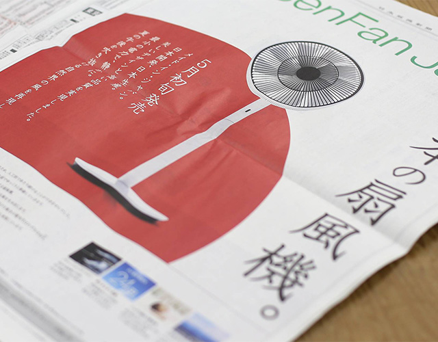
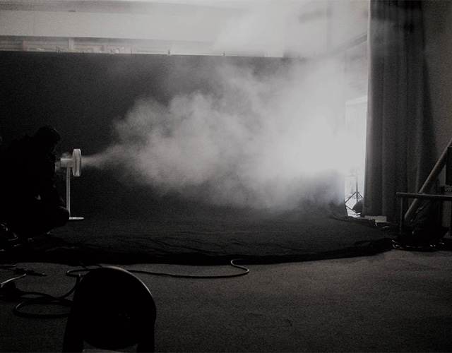
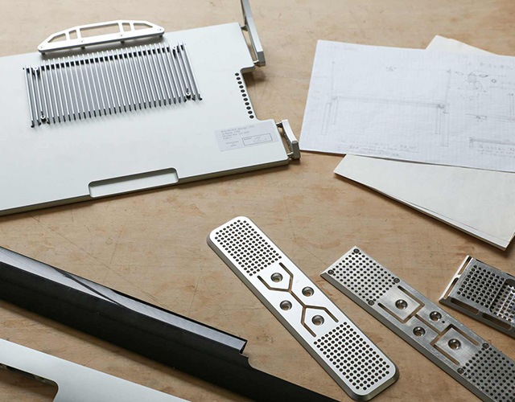

본문 영역
- Story .
- 발뮤다 제품을 만들기 위한 집념
발뮤다 이야기
-
- Hello Kitchen
- 발뮤다팀은 지금까지 「제품」, 즉 물건 이상을 개발하기 위해 노력했습니다.
- vol. 4
-

- 일본에서 만든 제품
- 일본에서 만든 제품 : Made in Japan에 담은 생각
- vol. 3
-

- 발뮤다 이야기
- 「GreenFan」의 개발 배경:발뮤다 창업 이래 지속해 온 이념을 리먼 사태를 겪으며 돌이켜 생각하게 되었습니다.
- vol. 2
-

- 발뮤다 이야기
- 제조 현장에서 시작:발뮤다 창업자 테라오 겐이 제품 개발을 시작한 것은 2001년의 일입니다.
- vol. 1